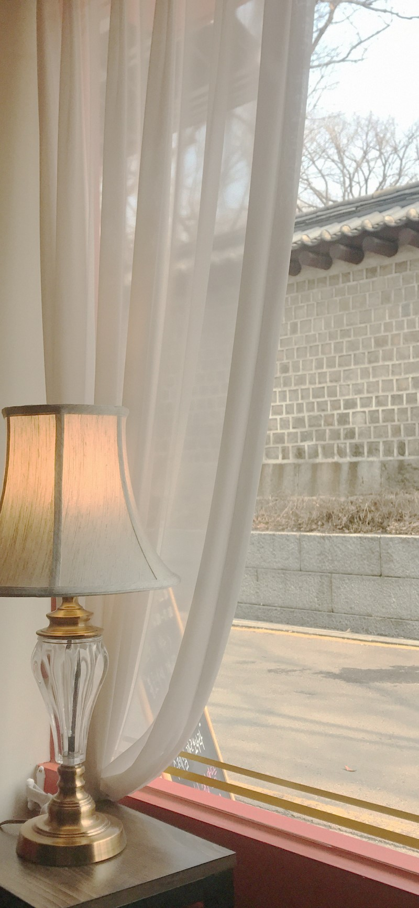

이미지 멀티 미디어 관련 태그
이미지 src속성 alt속성
width/height 속성
이미지의 가로길이와 세로 길이를 조정할 수 있는 속성
고정길이 px 가변길이 %로 조정 가능하다.
고정길이(px):기본값 화면 사이즈가 변동되어도 사진 크기는 고정
가변길이(%): 화면 사이즈에 따라서 사진 크기가 변동된다.

미디어 관련 태그
오디오 관련 태그
비디오 관련 태그
인덱스로 돌아가자